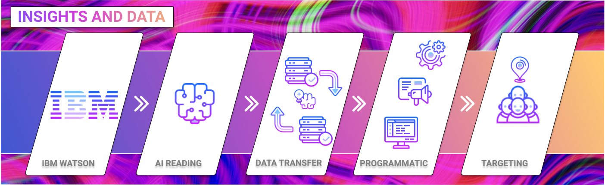

Sentiment uses IBM Watson natural language processing to understand the meaning of content created by and for diverse communities
This understanding is applied to deliver
- Inclusive and fair Brand Safety for diversity
- Cookieless contextual inclusion and reach
- Insight and data on diverse communities

Human curation plus AI = insight and understanding
Curated by diversity specialist consultants, Sentiment's AI is trained on hundreds of thousands of pages of content created for diverse communities around the world.
Sentiment provides intelligence across three sectors:
- Keyword tagging: active across any demographic channel on the network.
- Influence within media channels: using real-time data intelligence to influence a demographic.
- Sentiment Contextual Al: Analysing the Sentiment across articles in real-time. Sentiment uses IBM Watson Language Learning technology to provide contextual and conceptual tagging across the Brand Advance network.
- Al technology learns how articles are being written and can assess the SENTIMENT around given brands, keywords and concepts.
contact us ➤ DEMO@cultural-intelligence.co.uk
| © SENTIMENT(live) Ltd | A Brand Advance Group Company. All rights reserved.